OpenTelemetry в мире JavaScript
как приручить observability в веб-приложениях
Observability
Observability is about the unknown-unknowns; the ability to understand internal system states just by observing its outputs outside.
Charity Majors, Observability Pionerr, Co-Founder of Honeycomb.io
Observability is about the unknown-unknowns; the ability to understand internal system states just by observing its outputs outside.
Charity Majors, Observability Pionerr, Co-Founder of Honeycomb.io
Observability — аттрибут качества
Observability про нефункциональные требования
другие аттрибуты качества — performance, availability, a11yЗачем мне это нужно!?
Зачем мне это нужно!?
- Решение проблем
- Понимание системы
- Стабильность
- Производительность
Продакшн
Для разработки
- Отладчик
- Вывод в консоль
Код для express.js
// Падает в 1% случаев
const checkout = async () => {
if (Math.random() > 0.01) return;
throw new Error("checkout error");
};
app.get("/data", async (req, res) => {
console.log("GET /data request received");
try {
await checkout();
res.status(200).json({ success: true });
} catch (error) {
console.error(error);
res.status(500).json({ success: false });
}
});
В случае ошибки
Error: checkout error
at checkout (/.../examples/1-simple-express/index.js:9:9)
at /.../examples/1-simple-express/index.js:16:11
at Layer.handleRequest (/.../examples/1-simple-express/node_modules/router/lib/layer.js:152:17)
at next (/.../examples/1-simple-express/node_modules/router/lib/route.js:157:13)
at Route.dispatch (/.../examples/1-simple-express/node_modules/router/lib/route.js:117:3)
at handle (/.../examples/1-simple-express/node_modules/router/index.js:435:11)
at Layer.handleRequest (/.../examples/1-simple-express/node_modules/router/lib/layer.js:152:17)
at /.../examples/1-simple-express/node_modules/router/index.js:295:15
at processParams (/.../examples/1-simple-express/node_modules/router/index.js:582:12)
at next (/.../examples/1-simple-express/node_modules/router/index.js:291:5)
В случае ошибки
// Падает в 1% случаев
const checkout = async () => {
if (Math.random() > 0.01) return;
throw new Error("checkout error");
};
app.get("/data", async (req, res) => {
console.log("GET /data request received");
try {
await checkout();
res.status(200).json({ success: true });
} catch (error) {
console.error(error);
res.status(500).json({ success: false });
}
});
Добавим данных в вывод?
const log = (msg) => {
console.log(`[${new Date().toISOString()}] ${msg}`);
};
//[2025-04-07T00:19:23.471Z] my log message
log("my log message");
Добавим данных в вывод?
const log = (msg) => {
console.log(`[${new Date().toISOString()}] ${msg}`);
};
//[2025-04-07T00:19:23.471Z] my log message
log("my log message");
Не наш выбор
Добавим данных в вывод?
const log = (msg, level) => {
console.log(`[${new Date().toISOString()}] ${level}: ${msg}`);
};
//[2025-04-07T00:19:23.471Z] Error: my log message
log("my log message" 'Error');
Не наш выбор
// logger.js
module.exports = require("pino")();
//index.js
log = require("./logger");
...
log.info('/data')
try {
await checkout();
res.status(200).json({ success: true });
} catch (error) {
log.error({ error }, 'MySupperError');
res.status(500).json({ success: false });
}
...
string => JSON
{"level":30,"time":1743987006941,"pid":31808,"hostname":"Alexs-MacBook-Pro.local","msg":"/data"}
{"level":30,"time":1743987006942,"pid":31808,"hostname":"Alexs-MacBook-Pro.local","msg":"success checkout"}
{"level":30,"time":1743987006945,"pid":31808,"hostname":"Alexs-MacBook-Pro.local","msg":"/data"}
{"level":30,"time":1743987006945,"pid":31808,"hostname":"Alexs-MacBook-Pro.local","msg":"success checkout"}
{"level":30,"time":1743987006946,"pid":31808,"hostname":"Alexs-MacBook-Pro.local","msg":"/data"}
{"level":30,"time":1743987006946,"pid":31808,"hostname":"Alexs-MacBook-Pro.local","msg":"success checkout"}
{"level":30,"time":1743987006946,"pid":31808,"hostname":"Alexs-MacBook-Pro.local","msg":"/data"}
{"level":30,"time":1743987006946,"pid":31808,"hostname":"Alexs-MacBook-Pro.local","msg":"success checkout"}
{"level":30,"time":1743987006946,"pid":31808,"hostname":"Alexs-MacBook-Pro.local","msg":"/data"}
{"level":30,"time":1743987006946,"pid":31808,"hostname":"Alexs-MacBook-Pro.local","msg":"success checkout"}
{"level":30,"time":1743987006947,"pid":31808,"hostname":"Alexs-MacBook-Pro.local","msg":"/data"}
{"level":30,"time":1743987006947,"pid":31808,"hostname":"Alexs-MacBook-Pro.local","msg":"success checkout"}
Structured logs
Делаем красиво
module.exports = require("pino")({
transport: {
target: "pino-pretty",
options: {
colorize: true,
},
},
});
Делаем красиво
module.exports = require("pino")({
transport: {
target: "pino-pretty",
options: {
colorize: true,
},
},
});
[04:07:27.975] INFO (53569): success checkout
[04:07:28.163] INFO (53569): /checkout
[04:07:28.164] INFO (53569): success checkout
[04:07:28.342] INFO (53569): /checkout
[04:07:28.343] ERROR (53569): error on checkout
err: {
"type": "Error",
"message": "checkout error",
"stack":
Error: checkout error
at checkout (.../examples/2-better-logging/index.js:14:9)
at .../examples/2-better-logging/index.js:21:11
at Layer.handleRequest (.../examples/2-better-logging/node_modules/router/lib/layer.js:152:17)
at next (.../examples/2-better-logging/node_modules/router/lib/route.js:157:13)
at Route.dispatch (.../examples/2-better-logging/node_modules/router/lib/route.js:117:3)

Добавим две middleware
//ЭТО ОЧЕНЬ ПЛОХОЙ КОД, ОН НУЖЕН ДЛЯ ДЕМО. НЕ ПИШИТЕ ТАК
app.use((req, res, next) => {
const id = req.headers["id"] || "no-id";
req.logger = require("./logger.js").child({ "id": id });
next();
});
app.use((req, res, next) => {
const id = req.headers["id"] || "no-id";
req.axios = axios.create({headers: { id }});
next();
});
На самом деле, все сложнее
На самом деле, все сложнее
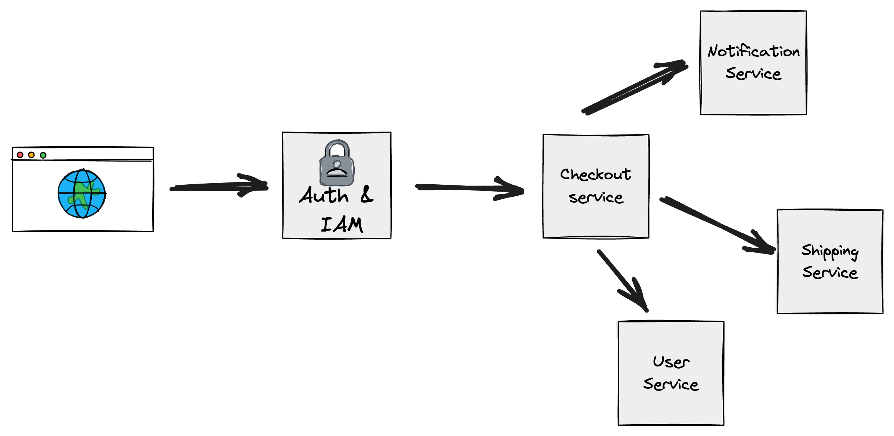На самом деле, все сложнее
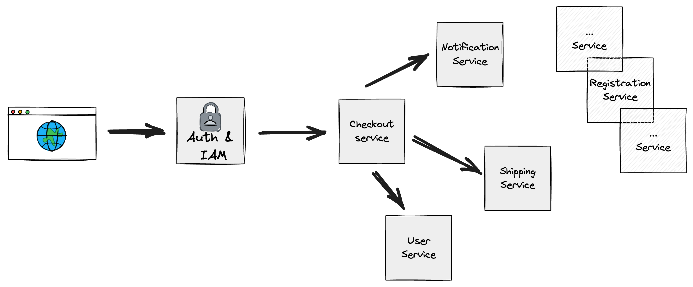На самом деле, все сложнее
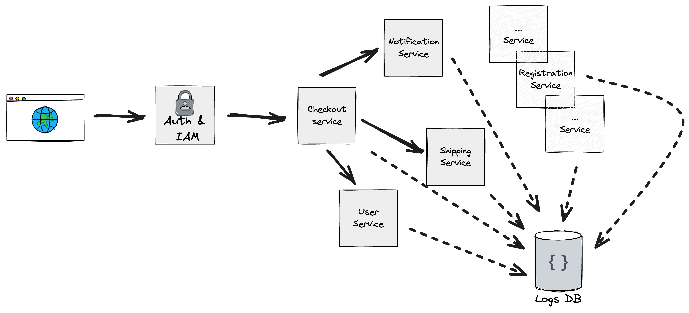Centralized Log Management
Добавим контекст
Добавим контекст
Добавим контекст
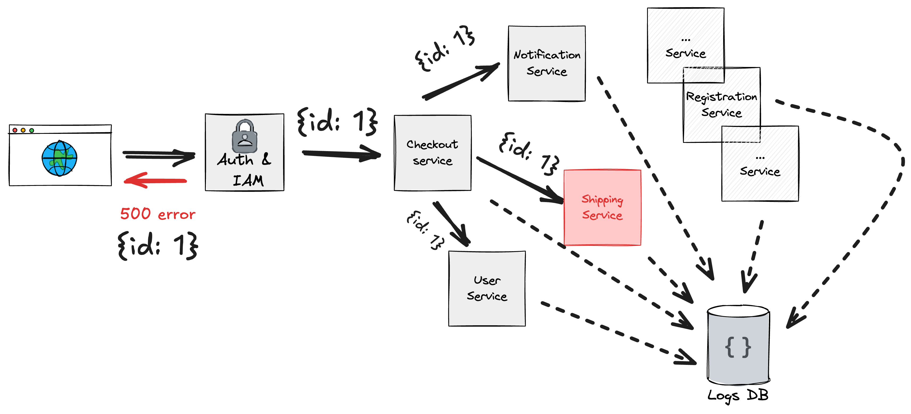Фильтруем по Id
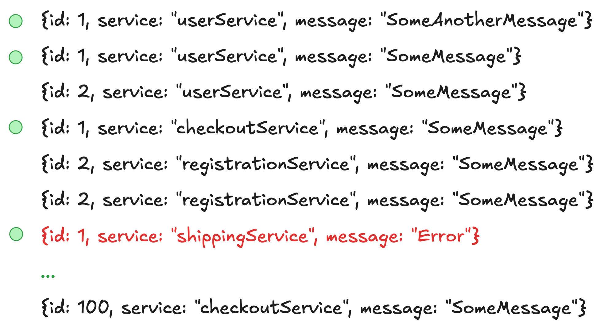Фильтруем по Id
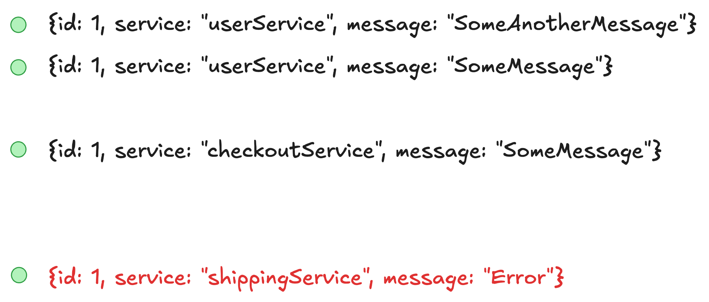Фильтруем по Id
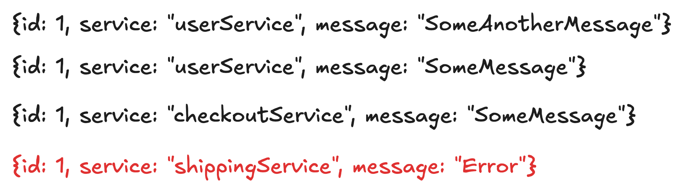Если подумать, то фильтрации недостаточно!
Я хочу знать путь
Строим путь
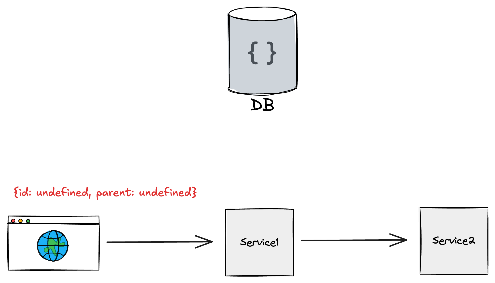Строим путь
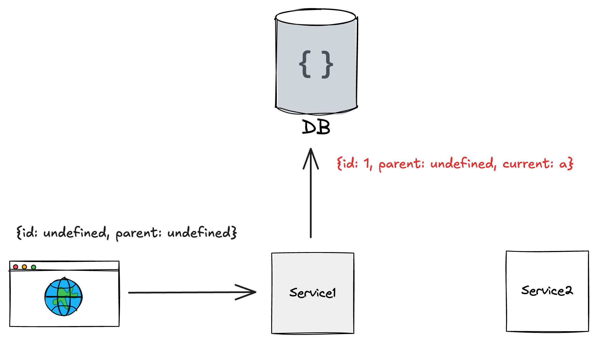Строим путь
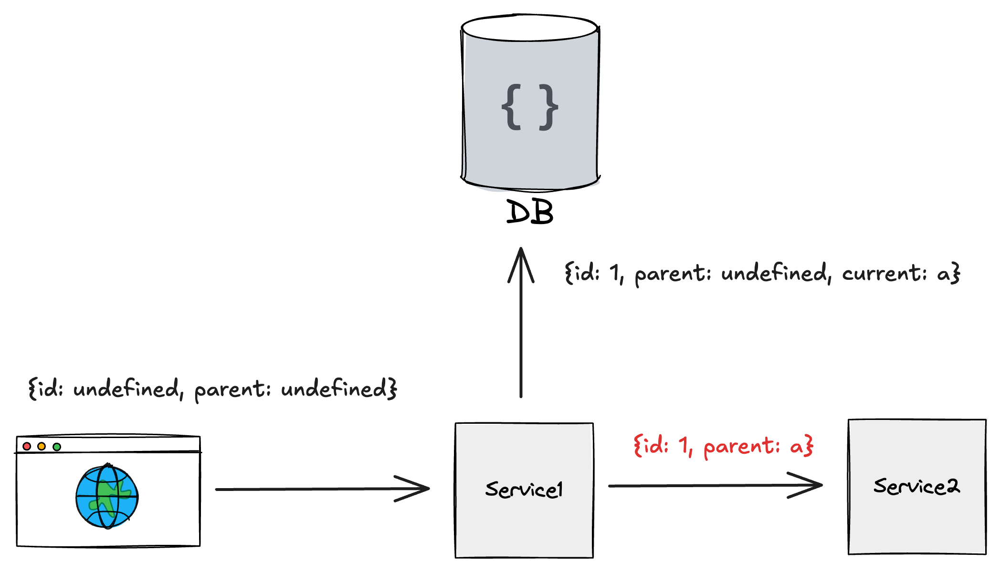Строим путь
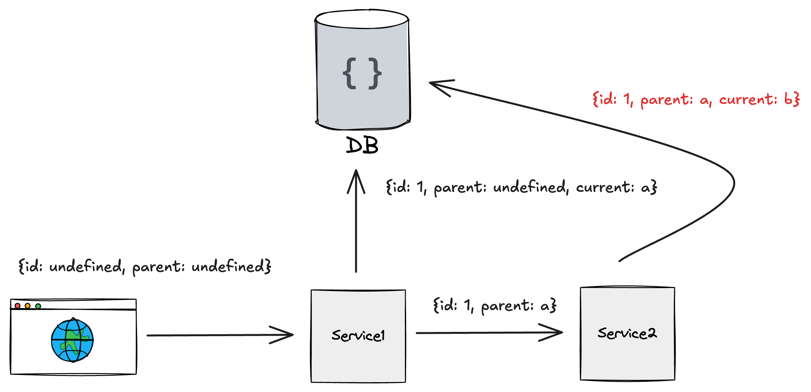Строим путь
Строим путь
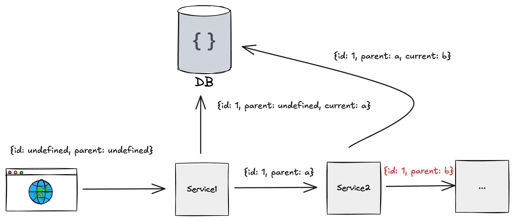Строим путь
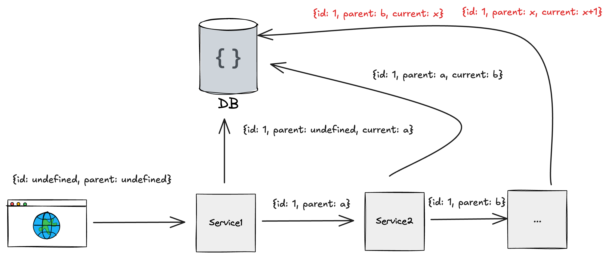Tracing
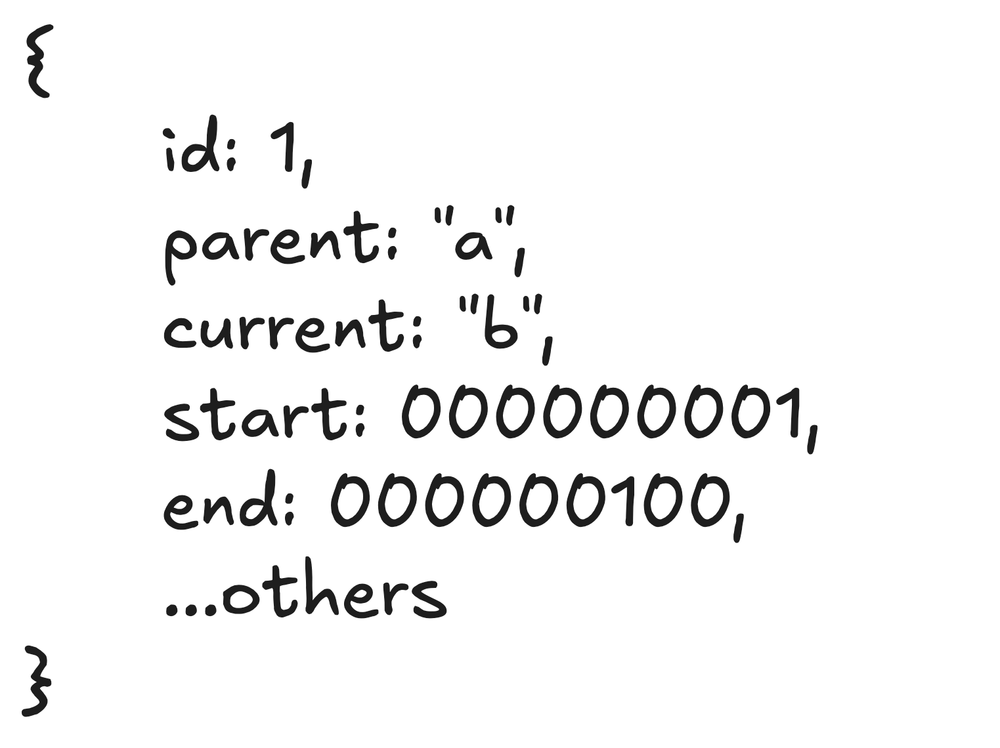Tracing
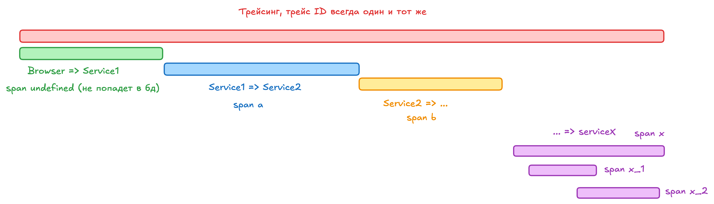www.w3.org/TR/trace-context
W3C Trace Context
1. Заголовок traceparent
| Version | TraceId | ParentId | TraceFlags |
|---|---|---|---|
| 00 | 0af7651916cd43dd8448eb211c80319c | b7ad6b7169203331 | 01 |
2. Заголовок tracestate
key1=value1;key2=value2— Зачем мне тогда логи, ведь есть трейсы?
— Зачем мне тогда логи, ведь есть трейсы?
— Не все можно описать трейсами!
app.listen(port, () => {
logger.info(`application running on port ${port}`);
});
3 Столпа Observability
- Логи
- Трейсы
- Метрики
И все должно работать в связке
Рекурсивный вызов функции
- Метрики: Аномально высокий CPU.utilization.
- Трейсы: Много вложенных spans с одинаковым именем.
- Логи: "StackOverflowError in module X".
→ Вывод: Бесконечная рекурсия из-за ошибки в коде.
Проблемы с внешним API
- Метрики: Рост http.client.errors у интеграции.
- Трейсы: Span с status=500 при вызове стороннего сервиса.
- Логи: "External API returned: Rate limit exceeded".
→ Вывод: Нужно добавить retry или увеличить лимиты.
Медленные HTTP-запросы
- Метрики: Рост 99-го перцентиля времени ответа.
- Трейсы: Длинный span в API-методе.
- Логи: Сообщение о таймауте БД в момент замедления.
→ Вывод: Проблема в запросе к медленной базе данных.
А где тут OpenTelemetry!?
OpenTelemetry, also known as OTel, is a vendor-neutral open source Observability framework for instrumenting, generating, collecting, and exporting telemetry data such as traces, metrics, and logs.
OpenTelemetry, also known as OTel, is a vendor-neutral open source Observability framework for instrumenting, generating, collecting, and exporting telemetry data such as traces, metrics, and logs.
Что не так со схемой?
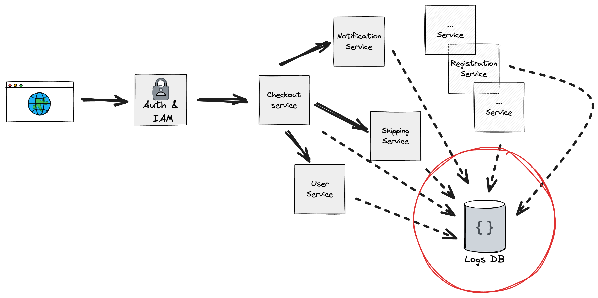Что не так со схемой
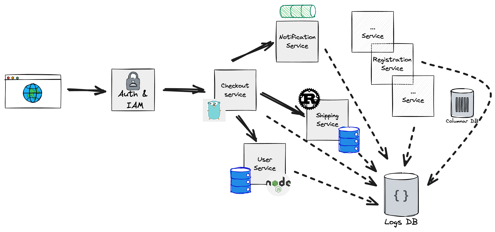OpenTelemetry (OTel) разрабатывается как open-source проект при поддержке Cloud Native Computing Foundation (CNCF), которая является частью Linux Foundation
Можно пройти бесплатный треннинг (opentelemetry.io/training)
Основная идея

Развиваем

1. Receivers (Приемники)
-
Traces (Трейсы)
- otlp (OpenTelemetry Protocol)
- jaeger (Jaeger-совместимый прием)
- zipkin (Zipkin-совместимый прием)
- kafka (получение трейсов из Kafka)
-
Metrics (Метрики)
- prometheus (прием метрик в формате Prometheus)
- statsd (StatsD-совместимый протокол)
- hostmetrics (метрики хоста: CPU, память, диски и т. д.)
-
Logs (Логи)
- fluentforward (Fluent Forward Protocol)
- syslog (Syslog-совместимый прием)
- filelog (чтение логов из файлов)
Получаем, преобрузуем, экспортируем

2.1 Filtering (Фильтрация)
Что делает?
- Игнорировать трейсы от определённого сервиса.
- Отфильтровывать метрики с низкой ценностью.
- Удалять логи, содержащие чувствительные данные
Зачем?
- Уменьшение объема данных, передаваемых дальше по pipeline.
- Снижение нагрузки на систему и затрат на хранение.
- Удаление ненужной или избыточной информации.
2.2 Redaction (Редактирование/Очистка)
Что делает?
- Маскирование номеров кредитных карт в логах.
- Удаление email-адресов из трейсов.
- Очистка HTTP-заголовков с токенами.
Зачем?
- Соответствие требованиям GDPR, HIPAA и другим стандартам безопасности.
- Предотвращение утечки данных в системы мониторинга.
2.3 Sampling (Сэмплирование)
Что делает?
Выбор части данных для обработки/экспорта вместо всей информации
- Head-based Sampling: Решение принимается в начале трейса (например, 10% трейсов).
- Tail-based Sampling: Решение принимается после анализа всего трейса (например, сохранять только трейсы с ошибками).
Зачем?
- Снижение затрат на хранение и передачу данных.
- Фокусировка на важных данных (ошибки, медленные запросы).
2.4 Batching (Пакетирование)
Что делает?
Объединение нескольких данных (например, спанов трейсов) в один пакет перед отправкой.
- Отправлять метрики не по одной, а пачками по 1000 штук.
- Группировать логи в блоки для более эффективной передачи.
Зачем?
- Оптимизация сети (меньше накладных расходов на передачу).
- Снижение нагрузки на систему-приёмник (например, Jaeger или Prometheus).
3. Exporters (Экспортеры)
Отправляют данные во внешние системы:-
Трейсы:
- otlp (отправка в другой Otel Collector или бэкенд)
- jaeger (Jaeger)
- zipkin (Zipkin)
- logging (логирование данных в stdout)
-
Метрики:
- prometheus (Prometheus)
- datadog (DataDog)
- awsemf (Amazon CloudWatch)
-
Логи:
- elasticsearch (Elasticsearch)
- loki (Grafana Loki)
- splunk_hec (Splunk)
Sidecar
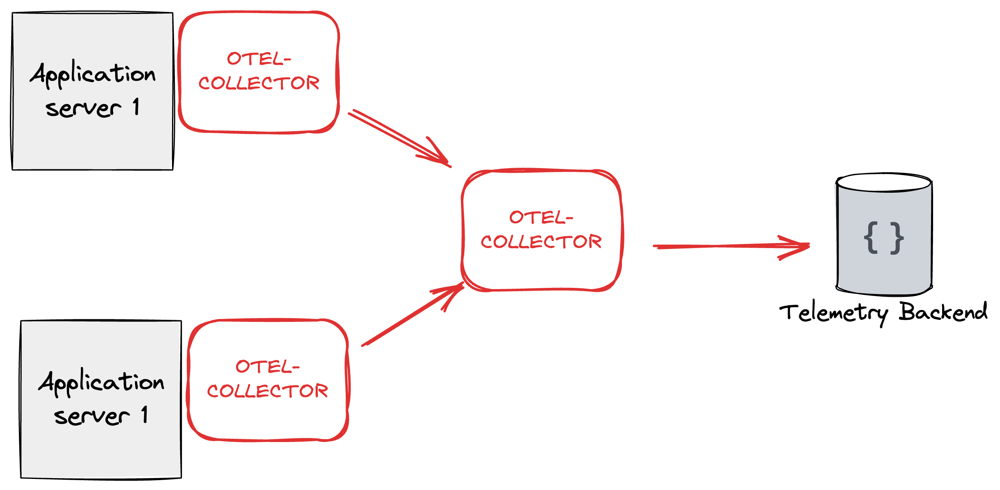Gateway
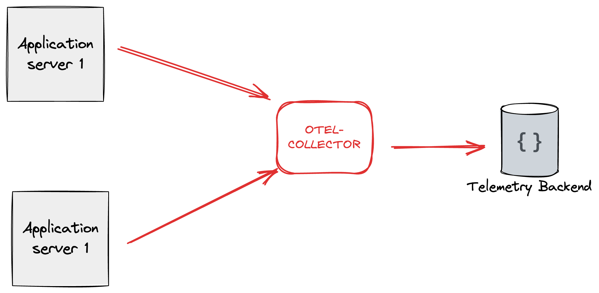Отправка данных в коллектор
docker run \
-p 4317:4319 \
-p 4318:4320 \
-p 55679:55679 \
--name telemetry-collector \
otel/opentelemetry-collector-contrib:latest